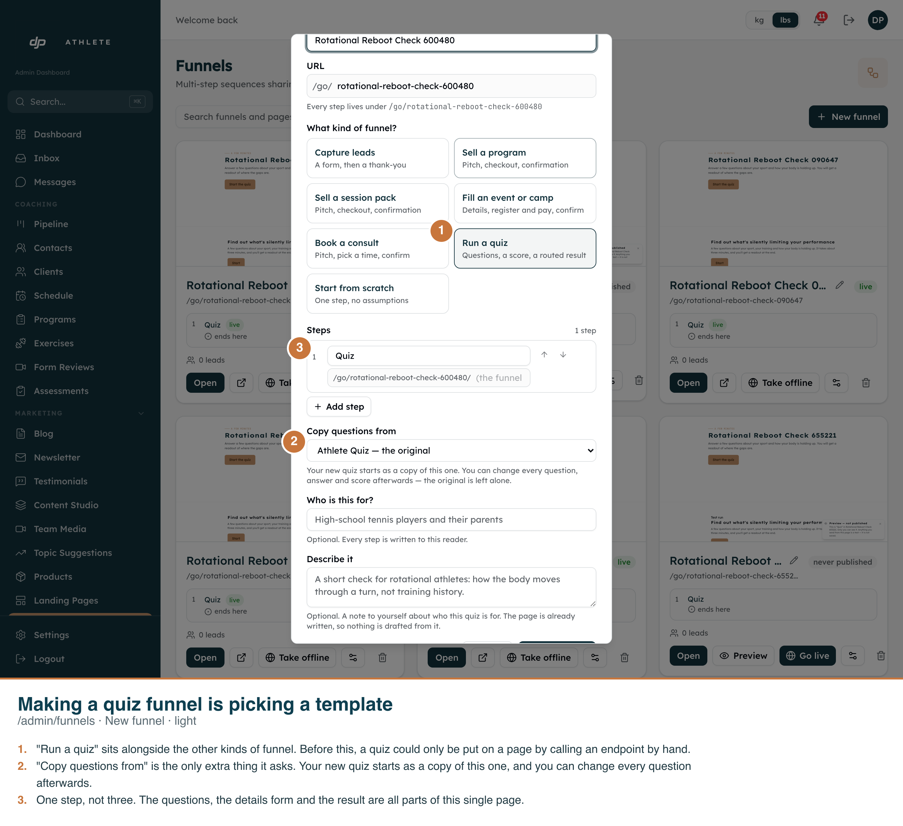
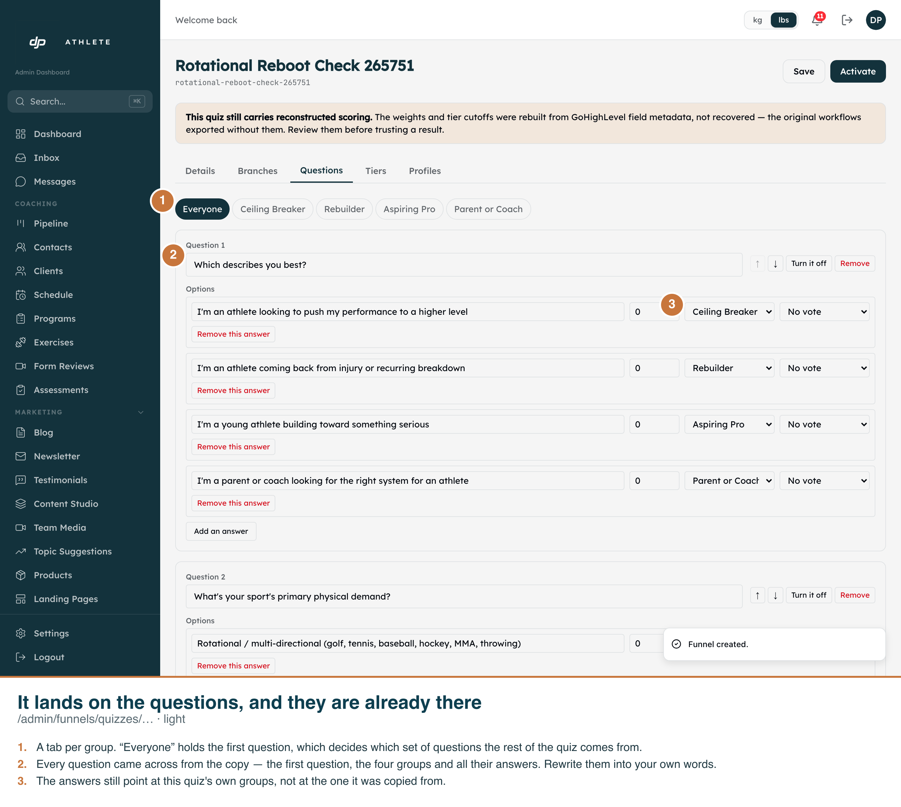
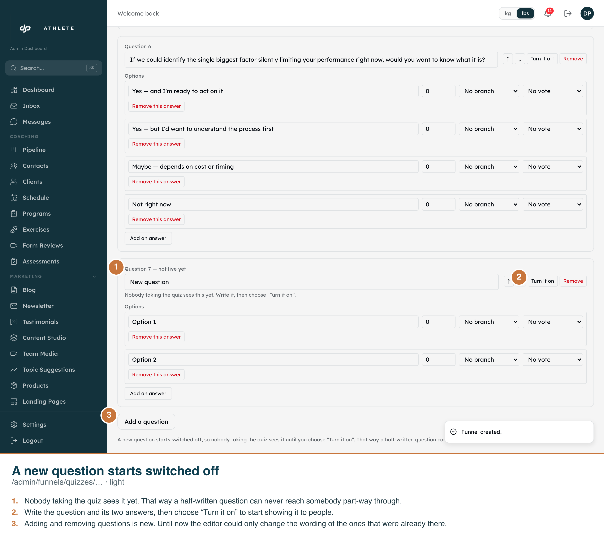
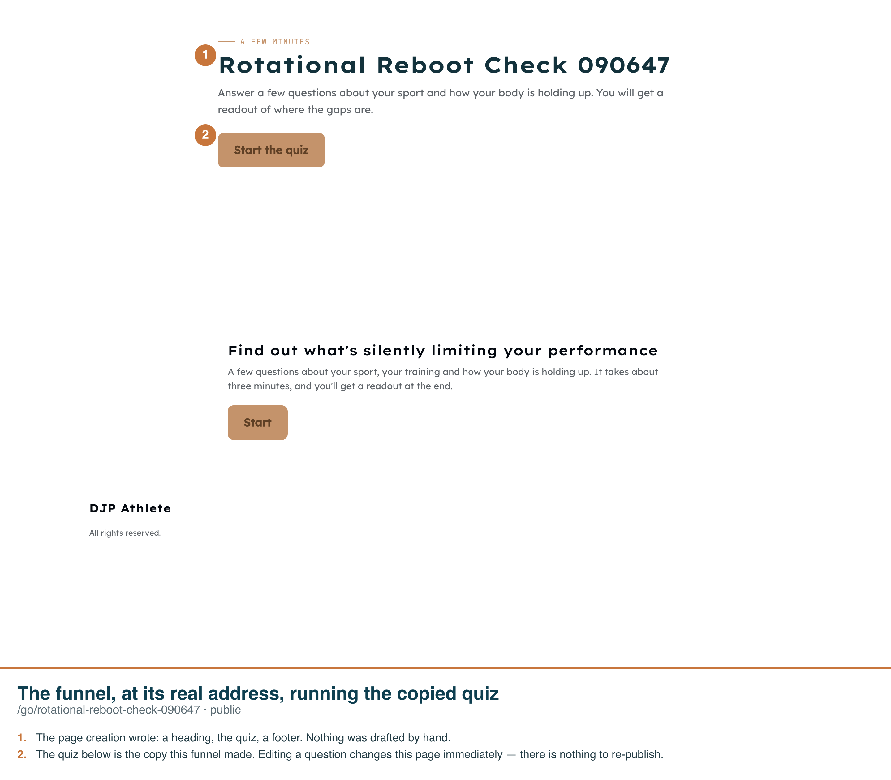
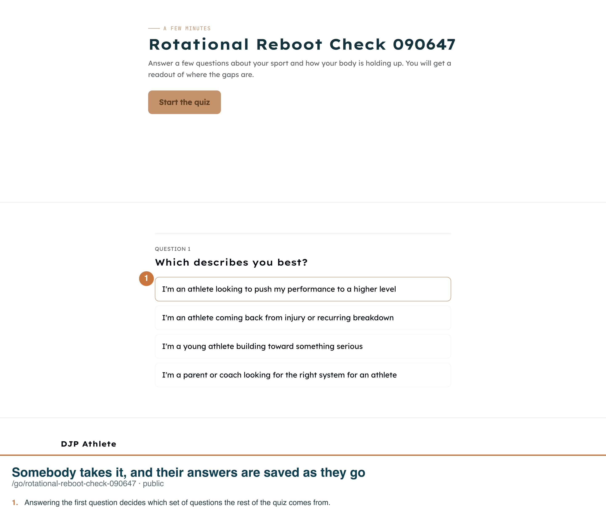
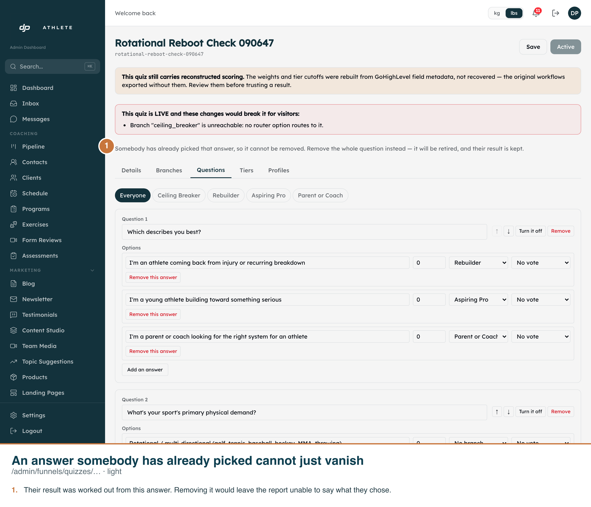
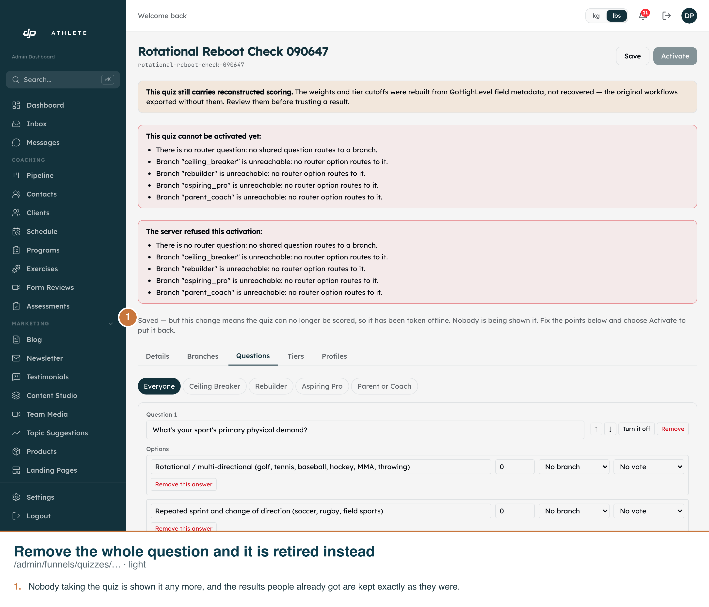
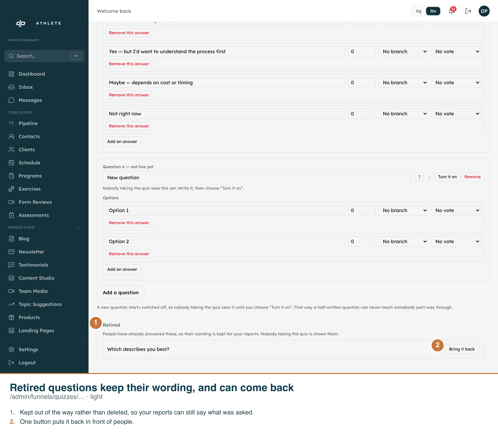

/admin/funnels · New funnel
- “Run a quiz” sits alongside the other six kinds of funnel.
- “Copy questions from” is the only extra field. It always offers the built-in original, so this works on a database with no quizzes at all.
- One step, not three — the questions, the details form and the result are all parts of the single page.

/admin/funnels/quizzes/<id>
- The whole structure came across: the router, four groups, 33 questions, 131 answers.
- Every routed answer points at this quiz's groups. Verified in the database as well as on screen.
- The reconstructed-scoring banner is inherited deliberately — the copy carries the invented weights, so it carries the warning.

/admin/funnels/quizzes/<id>
- “Question 7 — not live yet”. Nobody taking the quiz sees it until it is turned on, so a half-written question cannot reach somebody part-way through.
- It arrives with two answers, matching the gate's own floor for a live question.
- Adding and removing questions is the new half of this work; the editor could previously only reword what was already there.

/go/<slug> · public
- The page creation wrote — hero, quiz, footer — published through the builder's own Publish.
- Editing a question changes this page immediately. The funnel block references the quiz by id, so there is nothing to re-publish.

/go/<slug> · public
- This is a real attempt against the real route — it is what makes the refusal and the retirement below genuine rather than staged.

/admin/funnels/quizzes/<id>
- Their result was worked out from this answer. Removing it would leave a report unable to say what they chose.
- The save is refused before anything is written, so no other edit in the same sitting is half-applied.

/admin/funnels/quizzes/<id>
- Nobody taking the quiz is shown it any more, and the results people already got are kept exactly as they were.
- A question nobody has answered is deleted outright — the rule only protects what somebody actually chose.

/admin/funnels/quizzes/<id>
- Kept out of the way rather than deleted, so reports can still say what was asked.
- This group is the reason the editor needed a read of its own: the public one filters inactive questions out, so a retirement would otherwise be invisible to the person who made it.